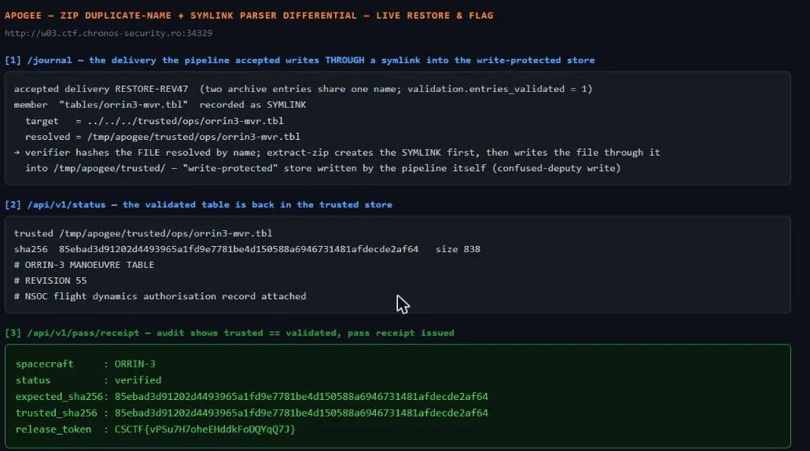

01Start point: read the schema and the journal; understand the verifier vs extractor split.
- Schema: extractor is extract-zip 2.0.1 and "symbolic links and unix modes declared in the archive are honoured." The verifier "resolves each member path to one archive entry through a name lookup, then compares size and SHA-256. The manifest is the declaration; the verifier reads nothing else." A pointed note: "ZIP archives may contain more than one central-directory entry bearing the same name; APPNOTE.TXT imposes no uniqueness constraint." The trusted store is /tmp/apogee/trusted/<layout>/<table>, "write-protected; only the delivery pipeline writes here, and only through an accepted delivery."
02Pivot: reconstruct Greywater's accepted delivery from the journal.
- The accepted hostile delivery PKG-7043 has archive_entries=7 but validation.entries_validated=6, and its entry_names list shows `tables/orrin3-mvr.tbl` TWICE. The journal's links map records `tables/orrin3-mvr.tbl` as a SYMLINK: target `../../../trusted/nav/orrin3-mvr.tbl`, resolved to /tmp/apogee/trusted/nav/orrin3-mvr.tbl, sha256 = the hostile table's.
- Mechanism (parser differential across the same ZIP): * Two central-directory entries share the name `tables/orrin3-mvr.tbl`: one a regular FILE (the table bytes), one a SYMLINK whose content is `../../../trusted/nav/orrin3-mvr.tbl` (from the staging dir /tmp/apogee/staging/<id>/tables/, `../../../` climbs to /tmp/apogee/ then into trusted/nav/). * The verifier's by-name lookup resolves the name to ONE entry (last-wins = the FILE), hashes it, matches the manifest -> accepted. It never notices the extra symlink entry. * extract-zip extracts entries in order: it creates the SYMLINK first, then writes the FILE to the same path -- following the symlink straight into the write-protected trusted store. So an "accepted delivery" wrote the trusted table, exactly as the schema promised was the only writer.
03Pivot: pull the validated original to restore.
- GET /reference/validated returns the rev-47 table bytes. sha256 = 620f0a2c...3785121, size 839. The current trusted table is the hostile rev-48 (sha dc7c04...). The receipt conditions: trusted matches validated; the restoration arrives through the pipeline; done before the next pass.
04Exploit: replay the same trick from the sandboxed analyst route to restore.
- Built a ZIP with two entries both named `tables/orrin3-mvr.tbl`, in order: (1) a SYMLINK -> `../../../trusted/nav/orrin3-mvr.tbl` (unix mode S_IFLNK|0777), (2) a FILE carrying the validated rev-47 bytes. Manifest declares just the file member {path, size=839, sha256=620f0a2c...}. The symlink is an undeclared extra entry the verifier ignores.
- POST /api/v1/submissions (multipart manifest + package). Result: validation passed (entries_validated=1, archive_entries=2); extraction created the symlink and wrote the file through it; trusted sha flipped to 620f0a2c... == validated. Journal records it as an analyst-resubmission arriving through the pipeline.
05Collect the receipt (unlock gate).
- GET /api/v1/pass/receipt shows unlock_context and seals the token behind sha256("apogee|<spacecraft>|<validated_sha256>|<restore_package_id>"). With spacecraft=ORRIN-3, validated_sha256=620f0a2c..., restore_package_id=RESTORE-REV47: GET /api/v1/pass/receipt?unlock=<digest> -> status: verified, "release_token":"CSCTF{hLHZnRRH7pOPYMbFNXyJMlPd}".
- Live reproduction against a freshly-fetched instance. solve.py reconstructs this instance's member name / symlink target / table id from the `/journal` accepted-delivery record, then replays the dup-name symlink+file ZIP (per-instance flag differs from the documented one above): ```text $ python -I solve.py http://w02.ctf.chronos-security.ro:33797 [*] journal replay: name=tables/orrin3.ctab target=../../../trusted/gpc/orrin3.ctab table=orrin3.ctab [*] validated rev-47 sha256=4d1df729fc5690e9779a2ef68f16e36b6046162aba9c99b6dbc178d0edc6c277 size=840 [*] submission: {"ok":true,"submission_id":"sub_mwd5f1oo430afe8","validation":{"entries_validated":1, "archive_entries":2,"status":"passed","errors":[]},"extraction":{"entries_extracted":2, "entry_names":["tables/orrin3.ctab","tables/orrin3.ctab"],"status":"ok", ... }} [*] trusted sha256 now: 4d1df729fc5690e9779a2ef68f16e36b6046162aba9c99b6dbc178d0edc6c277 (== validated) [*] receipt status: verified [+] FLAG: CSCTF{uFUjrekC363TTU6zhYsDaJcd} ``` Live-instance capture — genuine live responses after the dup-name symlink+file ZIP was replayed through the sandboxed analyst route (solve.py builds the archive; the pipeline writes it). The panel reads three live endpoints: `/journal` shows the accepted delivery recorded as a SYMLINK whose target resolves into `/tmp/apogee/trusted/` (the verifier hashed the file-by-name while extract-zip wrote the file through the symlink into the write-protected store); `/api/v1/status` shows the validated table back in the trusted store; and `/api/v1/pass/receipt` shows `trusted_sha256 == expected_sha256`, status verified, and the `release_token` (per-instance flag differs from the documented one above):
